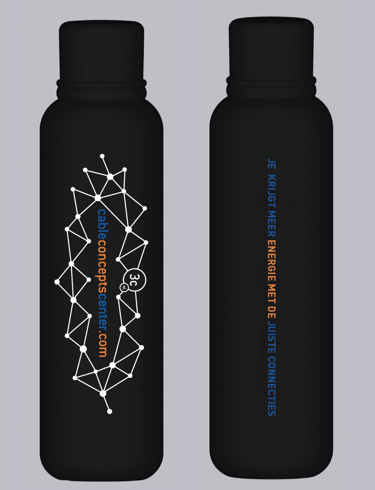
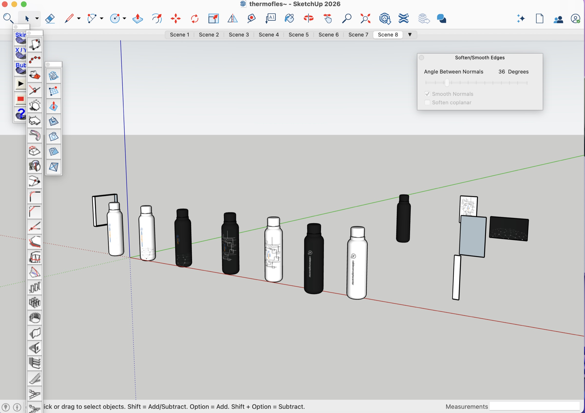

02 — INTERNSHIP · CLIENT PROJECT 02
Back to internship ↗Cable Concepts Center — Bottle Design
3D Visualisation / Graphic Design
I explored bottle and label concepts inspired by the client’s keywords: strength, speed, energy and connection. I modelled the bottle in SketchUp and created graphic variations in InDesign, applying them to the 3D model to compare their appearance and proportions.
Tools SketchUp · Adobe InDesign

